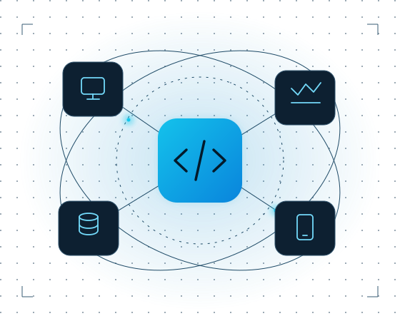

Independent software studio · United Kingdom
Thoughtful software.
Real-world impact.
We turn complex ideas into clear, purposeful software. An independent UK studio building products and exploring what comes next.
Small studio. Focused thinking. Built with care.
SC / SYSTEMS IN SYNC

IDEAS → CONNECTIONS → SOFTWAREFIG. 01
FROM IDEA TO IMPLEMENTATIONSoftware developmentProduct thinkingConnected applicationsResearch & development
Selected work & exploration
Ideas, brought to life.


The studio
Independent by nature.
Considered by design.
Singleton-Campbell Limited is a UK software development company with a straightforward ambition: to make useful software, thoughtfully.
Our work brings together product development and research into connected applications — with curiosity about the problem and care for the details.
More about Singleton-Campbell01 /
Purpose first
Start with a problem worth solving.
02 /
Clarity throughout
Make the complex feel straightforward.
03 /
Care in the details
Give every decision a reason.
Let’s make something useful